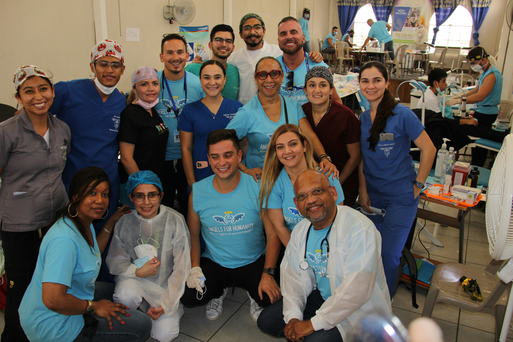
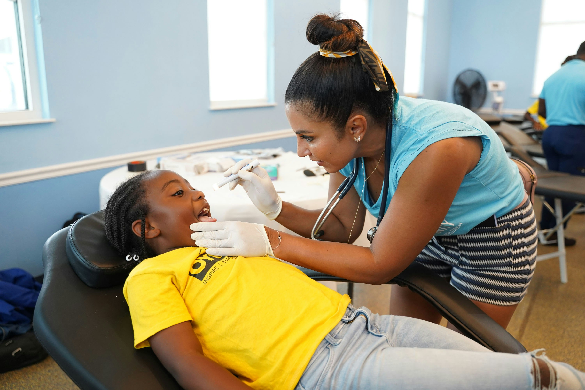
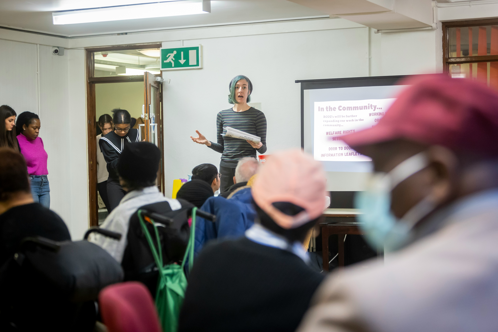

Connecting Communities to Better Health
Providing accessible health information and connecting rural communities to healthcare services across South Africa.
Volunteer Partner With UsOur Impact So Far
Community members across Gauteng and Limpopo
Local clinics connected to our network
Health workers and community volunteers
Health education sessions in communities
Our Programmes
We offer three free programmes to improve community health outcomes.

Health Workshops
We run health education workshops in communities covering topics like nutrition, hygiene, and disease prevention.
Learn More →
Clinic Connections
We connect community members to local clinics and help them access the healthcare services they need.
Learn More →
Youth Health Programme
We provide health education to young people on topics like mental health, sexual health, and substance abuse.
Learn More →Ready to Make a Difference?
Volunteer your time, partner with us, or sponsor a health programme.
Get Involved →